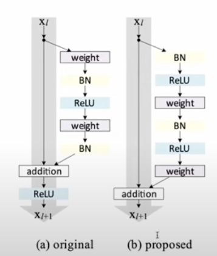
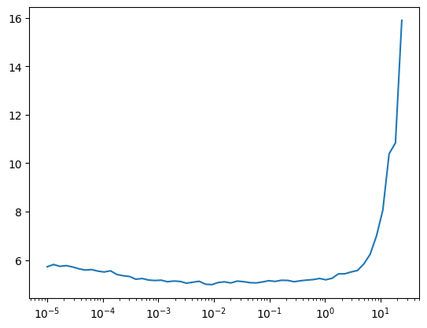
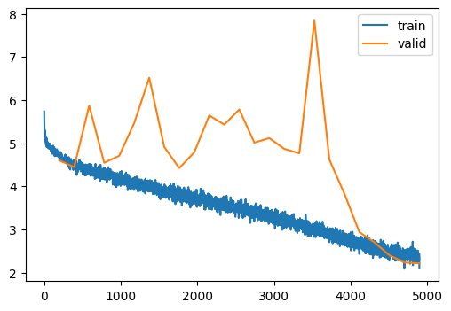

dls = get_imagenet_dls(bs=512, training_preprocessor=preprocess_and_trivial_augment)Tiny Imagenet (Part II)
Scaling up the dataset and training a UNet model
Adapted from
Improvements to the ResBlock
Consider the implementation of the ResBlock.
ResidualConvBlock??Init signature: ResidualConvBlock(c_in, c_out, stride=2, ks=3, act=True, norm=True) Source: class ResidualConvBlock(nn.Module): """Convolutional block with residual links""" def __init__(self, c_in, c_out, stride=2, ks=3, act=True, norm=True): super().__init__() self.conv_a = Conv(c_in, c_out, stride=1, ks=ks, act=act, norm=norm) self.conv_b = Conv(c_out, c_out, stride=stride, ks=ks, act=False, norm=norm) self.id_conv = nn.Conv2d(c_in, c_out, stride=1, kernel_size=1) self.act = GeneralReLU() if act else None def forward(self, x): x_orig = x.clone() # Downsample the original, if neccesary if self.conv_b.stride == (2, 2): x_orig = F.avg_pool2d(x_orig, kernel_size=2, ceil_mode=True) elif self.conv_b.stride[0] > 2 or self.conv_b.stride[1] > 2: raise ValueError else: assert self.conv_b.stride == (1, 1) # Add extra channels, if neccesary if self.conv_a.in_channels != self.conv_b.out_channels: x_orig = self.id_conv(x_orig) x = self.conv_a(x) x = self.conv_b(x) x += x_orig if self.act: x = self.act(x) return x File: ~/Desktop/SlowAI/nbs/slowai/resnets.py Type: type Subclasses:
Notice that the original logits are passed through the activation function. There is no “pure” identity path.
x += x_orig
if self.act:
x = self.act(x)
return xThis was pointed out in the “Identity Mappings in Deep Residual Networks” paper by the original author of the ResNet paper. This is called a pre-activation resblock.

class PreactivationConv(nn.Module):
def __init__(self, c_in, c_out, stride=2, ks=3):
super().__init__()
self.norm = nn.BatchNorm2d(c_in)
self.act = GeneralReLU()
self.conv = nn.Conv2d(
c_in,
c_out,
stride=stride,
kernel_size=ks,
padding=ks // 2,
)
def forward(self, x):
x = self.norm(x)
x = self.act(x)
x = self.conv(x)
return xclass PreactivationResidualConv(nn.Module):
"""Convolutional block with residual links"""
def __init__(self, c_in, c_out, stride=2, ks=3):
super().__init__()
self.c_in = c_in
self.c_out = c_out
self.stride = stride
self.conv_a = PreactivationConv(c_in, c_out, stride=1, ks=ks)
self.conv_b = PreactivationConv(c_out, c_out, stride=stride, ks=ks)
self.id_conv = nn.Conv2d(c_in, c_out, stride=1, kernel_size=1)
self.pool = nn.AvgPool2d(2, ceil_mode=True)
def forward(self, x):
# residual path
xr = x.clone()
if self.stride == 1:
pass
elif self.stride == 2:
xr = self.pool(xr)
else:
raise ValueError("Only 2x downsampling supported")
if self.c_in != self.c_out:
xr = self.id_conv(xr)
# non-residual path
x = self.conv_a(x)
x = self.conv_b(x)
return xr + xclass TinyImagePreactivationResNet(nn.Module):
def __init__(
self,
nfs,
n_blocks,
n_outputs=10,
p_drop=0.1,
):
super().__init__()
# Note that we __cannot__ start with a pre-activation
# resblock because it starts with a non-linearity!
# Doing so would throw away half the data
layers = [Conv(3, nfs[0], ks=5, stride=1)]
for nb, c_in, c_out in zip(n_blocks, nfs, nfs[1:]):
block = StackableResidualConvBlock(
nb,
c_in,
c_out,
conv_cls=PreactivationResidualConv,
)
layers.append(block)
self.layers = nn.Sequential(*layers)
self.conv_act = GeneralReLU()
self.conv_norm = nn.BatchNorm2d(nfs[-1])
self.pool = nn.AdaptiveAvgPool2d(output_size=1)
self.flatten = nn.Flatten()
self.drop = nn.Dropout(p_drop)
self.lin = nn.Linear(nfs[-1], n_outputs, bias=False)
self.lin_norm = nn.BatchNorm1d(n_outputs)
def forward(self, x):
x = self.layers(x)
# Since the identity path has no ReLu, we need to
# perform a non-linearity and normalization at the
# end of the conv block stack
x = self.conv_act(x)
x = self.conv_norm(x)
x = self.pool(x)
x = self.flatten(x)
x = self.drop(x)
x = self.lin(x)
x = self.lin_norm(x)
return x
@classmethod
def kaiming(cls, *args, **kwargs):
model = cls(*args, **kwargs)
model.apply(init_leaky_weights)
return modeldef get_model():
n_blocks = (3, 2, 2, 1, 1)
return TinyImagePreactivationResNet.kaiming(
n_outputs=200,
nfs=[32, 64, 128, 256, 512, 1024],
n_blocks=(3, 2, 2, 1, 1),
)model = get_model()
mods = [*model.layers, model.conv_norm, model.lin, model.lin_norm]
summarize(model, mods, dls)| Type | Input | Output | N. params | MFlops |
|---|---|---|---|---|
| Conv | (512, 3, 64, 64) | (512, 32, 64, 64) | 2,464 | 9.8 |
| StackableResidualConvBlock | (512, 32, 64, 64) | (512, 64, 32, 32) | 214,272 | 218.1 |
| StackableResidualConvBlock | (512, 64, 32, 32) | (512, 128, 16, 16) | 542,336 | 138.4 |
| StackableResidualConvBlock | (512, 128, 16, 16) | (512, 256, 8, 8) | 2,166,016 | 138.4 |
| StackableResidualConvBlock | (512, 256, 8, 8) | (512, 512, 4, 4) | 3,673,088 | 58.7 |
| StackableResidualConvBlock | (512, 512, 4, 4) | (512, 1024, 2, 2) | 14,686,208 | 58.7 |
| BatchNorm2d | (512, 1024, 2, 2) | (512, 1024, 2, 2) | 2,048 | 0.0 |
| Linear | (512, 1024) | (512, 200) | 204,800 | 0.2 |
| BatchNorm1d | (512, 200) | (512, 200) | 400 | 0.0 |
| Total | 21,491,632 | 622.4215839999999 |
lr_find(model, dls, start_lr=1e-5, extra_cbs=[])
0.00% [0/2 00:00<?]
28.57% [56/196 00:22<00:56 10.839]

model = get_model()
train(model, dls, lr=0.1, n_epochs=25, extra_cbs=[])| MulticlassAccuracy | loss | epoch | train |
|---|---|---|---|
| 0.041 | 4.908 | 0 | train |
| 0.065 | 4.602 | 0 | eval |
| 0.067 | 4.606 | 1 | train |
| 0.073 | 4.447 | 1 | eval |
| 0.084 | 4.434 | 2 | train |
| 0.044 | 5.870 | 2 | eval |
| 0.096 | 4.323 | 3 | train |
| 0.087 | 4.546 | 3 | eval |
| 0.106 | 4.231 | 4 | train |
| 0.065 | 4.708 | 4 | eval |
| 0.118 | 4.127 | 5 | train |
| 0.060 | 5.467 | 5 | eval |
| 0.132 | 4.029 | 6 | train |
| 0.035 | 6.517 | 6 | eval |
| 0.144 | 3.939 | 7 | train |
| 0.061 | 4.914 | 7 | eval |
| 0.157 | 3.848 | 8 | train |
| 0.093 | 4.422 | 8 | eval |
| 0.170 | 3.756 | 9 | train |
| 0.093 | 4.788 | 9 | eval |
| 0.181 | 3.696 | 10 | train |
| 0.060 | 5.643 | 10 | eval |
| 0.193 | 3.611 | 11 | train |
| 0.036 | 5.431 | 11 | eval |
| 0.210 | 3.528 | 12 | train |
| 0.060 | 5.781 | 12 | eval |
| 0.221 | 3.451 | 13 | train |
| 0.105 | 5.013 | 13 | eval |
| 0.237 | 3.364 | 14 | train |
| 0.074 | 5.118 | 14 | eval |
| 0.255 | 3.260 | 15 | train |
| 0.109 | 4.867 | 15 | eval |
| 0.272 | 3.162 | 16 | train |
| 0.131 | 4.765 | 16 | eval |
| 0.290 | 3.056 | 17 | train |
| 0.018 | 7.841 | 17 | eval |
| 0.311 | 2.954 | 18 | train |
| 0.145 | 4.621 | 18 | eval |
| 0.332 | 2.840 | 19 | train |
| 0.215 | 3.830 | 19 | eval |
| 0.355 | 2.729 | 20 | train |
| 0.326 | 2.938 | 20 | eval |
| 0.377 | 2.618 | 21 | train |
| 0.364 | 2.700 | 21 | eval |
| 0.396 | 2.523 | 22 | train |
| 0.417 | 2.401 | 22 | eval |
| 0.414 | 2.443 | 23 | train |
| 0.453 | 2.234 | 23 | eval |
| 0.420 | 2.402 | 24 | train |
| 0.457 | 2.214 | 24 | eval |

Considerably worse. I wonder why.